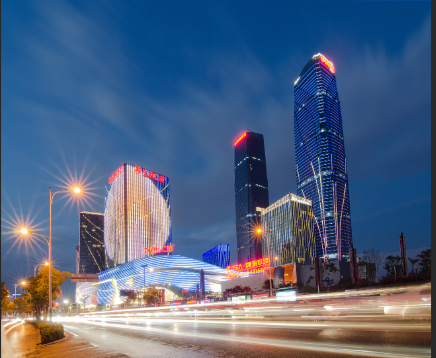

春城——昆明
昆明是 国家历史文化名城 ，早在三万年前就有人类在 滇池 周围生息繁衍；公元前278年 滇国 建立，定都于此；765年 南诏国 筑拓东城，为昆明建城之始；明末时期， 南明 永历政权 在昆明建都。 昆明属北亚热带低纬高原山地季风气候，为山原地貌，三面环山，南濒 滇池 ，沿湖风光绮丽，由于地处低纬高原而形成“ 四季如春 ”的气候，享有“ 春城 ”的美誉。昆明地处中国西南地区、云贵高原中部，位于东经102°10'～103°40'，北纬24°23'～26°22'之间。具有“东连黔桂通沿海，北经川渝进中原，南下越老达泰柬，西接缅甸连印巴”的独特区位，处在南北国际大通道和以深圳为起点的第三座东西向亚欧大陆桥的交汇点，是中国面向东南亚、南亚开放的门户城市，位于东盟“10+1”自由贸易区经济圈、大湄公河次区域经济合作圈、泛珠三角区域经济合作圈的交汇点。
昆明近期热点
-
1多年来，当地加大对生态环境和生物多样性的修复和保护力度，如今的罗平岩溶大地呈现物种丰富、人与自然和谐发展的美好画面，集生态颜值在线、生态旅游蓬勃发展的良好趋势。
-
2近日，中国铁路昆明局集团有限公司统筹疫情防控和客运组织，实施“一日一图”，精准开车，推出“坐着高铁追寻红色足迹”精品乘车路线。
-
3盛夏时节，梅果飘香，素有“中国古梅之乡”的洱源，迎来了一年一度的夏日限定青梅采摘季。“网络名人助力乡村振兴——寻找洱源美好推荐官”第二季直播活动也即将于6月29日、30日，在这里拉开序幕。
昆明历史发展
昆明是中华文化发祥地之一，早在三万年前，“昆明人”就在滇池周围生息繁衍，三万年间昆明的历史连绵不断，文化代代传承；昆明是历史大戏频频上演的舞台，这里上演过庄蹻开滇、明末农民军据昆反清、创办云南陆军讲武堂、修建滇越铁路、西南联大迁驻、抢修滇缅公路、开通驼峰航线等历史大剧。 昆明是有重要历史地位的都会，它曾作为滇国的中心、南诏大理国五百多年的副都、明末永历政权的“滇都”、支撑抗战的重要基地和抗战决胜的桥头堡、闻名世界的“民主堡垒”。 昆明曾孕育和汇聚了一批杰出的历史人物，郑和、杨升庵、孙髯翁、蔡锷、朱德、叶剑英、聂耳、蔡希陶、李广田、杨振宁、李政道、邓稼先等历史名人或生于此或在此长期活动。 昆明具有光荣的革命传统，重九起义、护国首义、“一二·一”运动、昆明起义等影响全国的重大历史事件发生在此。